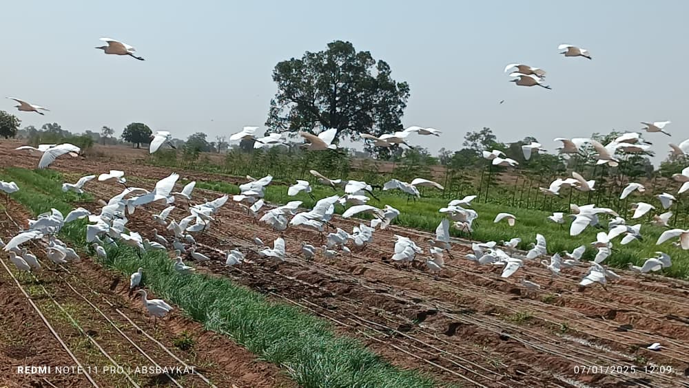

La qualité dès la culture.
La mangue Kent est appréciée pour sa chair douce et juteuse et pour son goût. Le domaine respecte des exigences rigoureuses de culture et de récolte pour offrir des produits de qualité à ses clients.
Nos valeurs
Qualité, traçabilité et respect des ressources guident les pratiques du domaine.
La mangue Kent est appréciée pour sa chair douce et juteuse et pour son goût. Le domaine respecte des exigences rigoureuses de culture et de récolte pour offrir des produits de qualité à ses clients.
Le domaine a mis en place des systèmes de traçabilité pour assurer la sécurité alimentaire. Chaque mangue peut être suivie depuis l’arbre jusqu’au consommateur.
Le domaine utilise des techniques agricoles modernes, dont l’irrigation goutte-à-goutte, pour optimiser les rendements tout en préservant les ressources naturelles. Ses pratiques de culture durables visent à limiter son empreinte écologique. Les plantations de manguiers contribuent également à la séquestration du carbone.
Qualité & confiance
Le domaine a obtenu des certifications internationales de qualité et de durabilité, qui renforcent la confiance de ses clients et son accès à de nouveaux marchés.
Les références qualité et démarches citées dans sa présentation :
